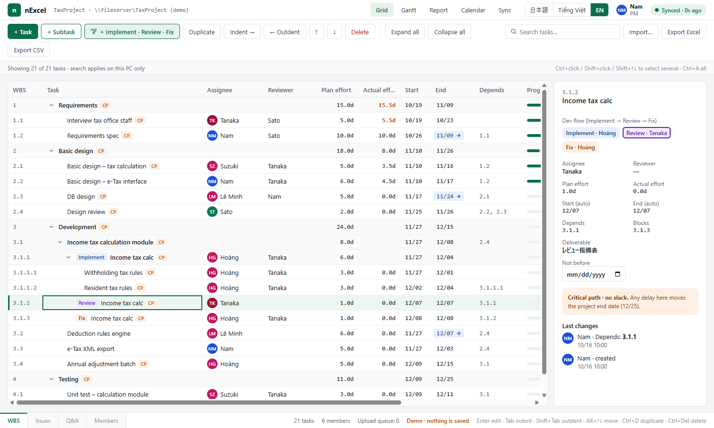
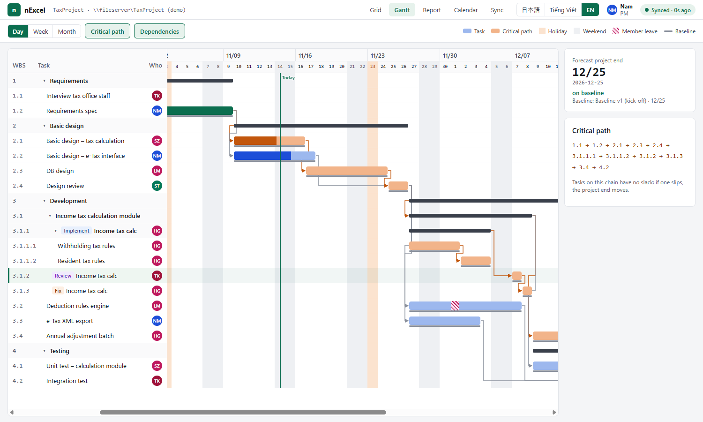

WBS & schedule for your team — on a shared folder. チームの WBS とスケジュールを、共有フォルダーだけで。 WBS & tiến độ cho cả team — chỉ cần một thư mục share.
Feels like Excel, schedules itself. Change one effort and every dependent date moves — weekends, Japanese holidays and member leave are skipped automatically. No server, no internet, no install. Excel の使い心地で、日程は自動計算。工数を1つ変えるだけで後続タスクの日付がすべて動き、土日・祝日・メンバーの休暇は自動で除外されます。サーバー不要・インターネット不要・インストール不要。 Dùng như Excel, lịch tự tính. Sửa một con số công là mọi task phụ thuộc tự dời ngày — thứ 7, CN, ngày lễ Nhật và ngày nghỉ của thành viên được bỏ qua tự động. Không server, không internet, không cài đặt.
Browser version: Microsoft Edge or Google Chrome. Try the built-in demo project — nothing is saved. ブラウザー版：Microsoft Edge または Google Chrome。内蔵のデモプロジェクトで試せます（保存されません）。 Bản trình duyệt: Microsoft Edge hoặc Google Chrome. Có sẵn dự án demo để dùng thử (không lưu gì).

What it doesできることLàm được gì
Excel-like WBSExcel 感覚の WBSWBS như Excel
Unlimited levels, type to edit, Tab to indent, multi-select, duplicate, Implement → Review → Fix in one click.階層は無制限。入力・Tab でインデント・複数選択・複製。「実装→レビュー→修正」をワンクリックで作成。Không giới hạn cấp, gõ là sửa, Tab để thụt, chọn nhiều, nhân bản, tạo Làm → Review → Fix bằng một nút.
Auto-scheduling自動スケジューリングTự lập lịch
Dependencies, critical path, Japanese holidays (built in, offline), company holidays, Vietnam calendar, member leave with impact preview.依存関係・クリティカルパス・祝日（内蔵・オフライン）・会社休日・ベトナムカレンダー・休暇の影響プレビュー。Phụ thuộc, đường găng, ngày lễ Nhật (có sẵn, offline), ngày nghỉ công ty, lịch Việt Nam, ngày nghỉ thành viên kèm xem trước tác động.
Gantt & 予実 reportガント・予実レポートGantt & báo cáo 予実
Gantt with baseline, planned-vs-actual S-curve, workload, behind-plan list, weekly report (週次進捗報告) to Excel.ベースライン付きガント、予実 S カーブ、負荷、遅延タスク、週次進捗報告の Excel 出力。Gantt có baseline, đường S kế hoạch/thực tế, khối lượng, task trễ, báo cáo tuần (週次進捗報告) ra Excel.
20 people, nothing lost20人同時でも安全20 người cùng sửa
Each PC writes only its own change file on the share. Simultaneous edits of the same cell are kept and shown for a decision.各PCは共有フォルダー上の自分の変更ファイルにだけ書き込みます。同じセルの同時編集は両方保持され、どちらを採用するか選べます。Mỗi máy chỉ ghi file thay đổi của riêng mình trên thư mục share. Hai người sửa cùng một ô thì cả hai giá trị được giữ để chọn.
Import your old Excel既存の Excel を取り込みNhập file Excel cũ
.xlsx or .csv (Shift_JIS too). Columns recognised in Japanese, Vietnamese and English; levels from WBS numbers, grouping or indent..xlsx・.csv（Shift_JIS 対応）。日本語・ベトナム語・英語の見出しを自動認識。階層は WBS 番号・グループ化・インデントから。.xlsx hoặc .csv (cả Shift_JIS). Nhận diện cột tiếng Nhật, Việt, Anh; cấp lấy từ số WBS, nhóm hoặc thụt lề.
3 languages3言語3 ngôn ngữ
日本語 / Tiếng Việt / English — each person picks their own, the data stays the same.日本語・ベトナム語・英語を各自で切り替え。データは共通です。Mỗi người tự chọn 日本語 / Tiếng Việt / English, dữ liệu vẫn là một.

How it worksしくみCách hoạt động
- Put a project folder on the file server everyone can reach, e.g.
\\fileserver\TaxProject.全員がアクセスできるファイルサーバー上にプロジェクトフォルダーを用意します（例：\\fileserver\TaxProject）。Tạo một thư mục dự án trên file server mà cả team truy cập được, vd.\\fileserver\TaxProject. - Open it in nExcel (browser or Windows app). The first person creates the project; nExcel keeps its data in a hidden
.nexcelsubfolder.nExcel（ブラウザー版または Windows 版）で開きます。最初の人がプロジェクトを作成し、データは隠しフォルダー.nexcelに保存されます。Mở thư mục bằng nExcel (bản trình duyệt hoặc bản Windows). Người đầu tiên tạo dự án; dữ liệu nằm trong thư mục ẩn.nexcel. - Everyone else opens the same folder (or double-clicks the
.nwbsfile with the Windows app). Changes appear on every PC within a few seconds.他のメンバーも同じフォルダーを開きます（Windows 版なら.nwbsファイルをダブルクリック）。変更は数秒で全員の画面に反映されます。Những người khác mở cùng thư mục (bản Windows thì double-click file.nwbs). Thay đổi hiện trên mọi máy sau vài giây.
\\fileserver\TaxProject\
├── TaxProject.nwbs ← double-click
└── .nexcel\
├── changes\
│ ├── nam@pc-1a2b-2026-11.jsonl ← only this PC writes it
│ └── tanaka@pc-9f0c-2026-11.jsonl
└── snapshots\
DownloadダウンロードTải về
| Windows installerWindows インストーラーBộ cài Windows | nExcel_0.1.0_x64-setup.exe (1.5 MB) Windows 10/11 64-bit. Installs for the current user only — no administrator rights needed. Uses the Microsoft Edge WebView2 runtime that Windows already includes. Associates .nwbs files.Windows 10/11（64bit）。現在のユーザーにのみインストールされ、管理者権限は不要です。Windows に含まれる Microsoft Edge WebView2 を使用します。.nwbs ファイルを関連付けます。Windows 10/11 64-bit. Cài cho người dùng hiện tại, không cần quyền admin. Dùng Microsoft Edge WebView2 có sẵn trong Windows. Gắn với đuôi file .nwbs. |
|---|---|
| SHA-256 | 75ab3fb9e7f418539394149732caeb0bfe0b48a6227388cc0ddfc2611f5cf55c |
| Browser versionブラウザー版Bản trình duyệt | mlightvn.github.io/app/ One self-contained page; it works offline once loaded and never sends your data anywhere.1ファイルで完結。読み込み後はオフラインで動作し、データを外部に送信しません。Chỉ một trang duy nhất; đã tải xong là chạy offline và không gửi dữ liệu đi đâu. |
| VersionバージョンPhiên bản | 0.1.0 · 2026-11-14 |